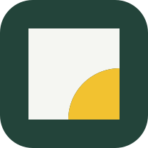
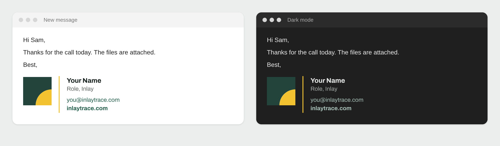
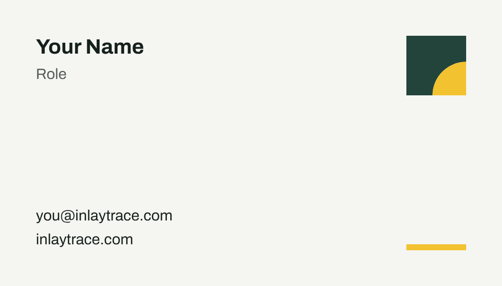
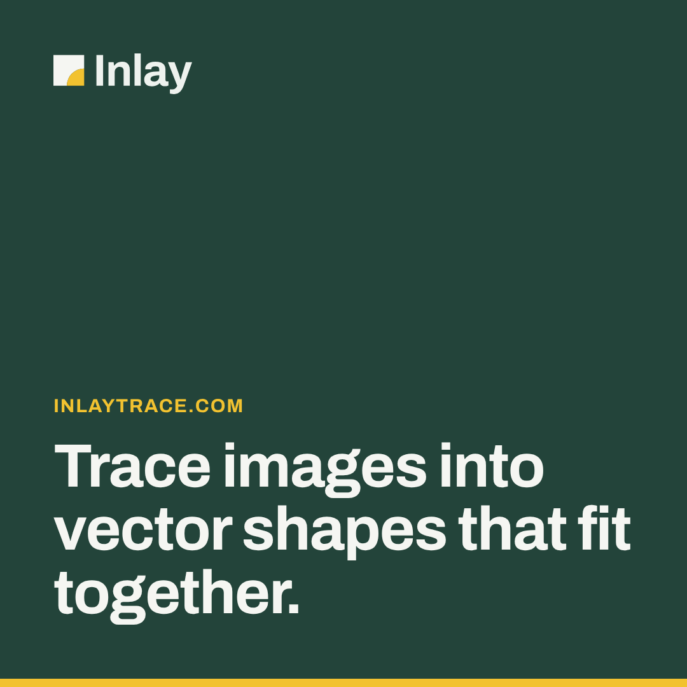
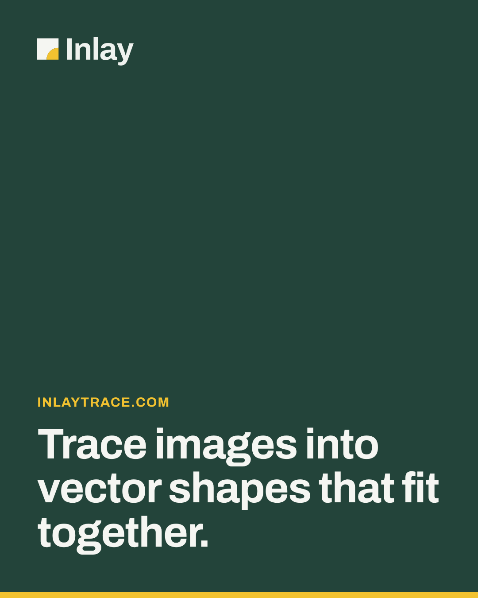
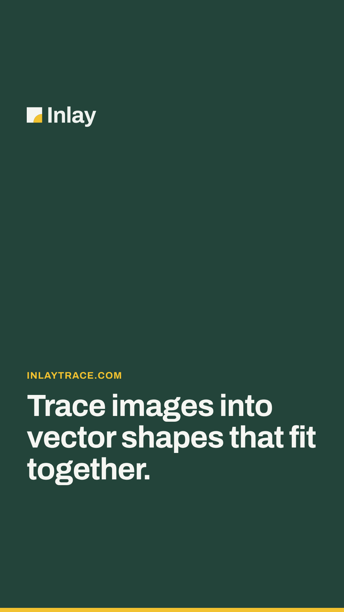
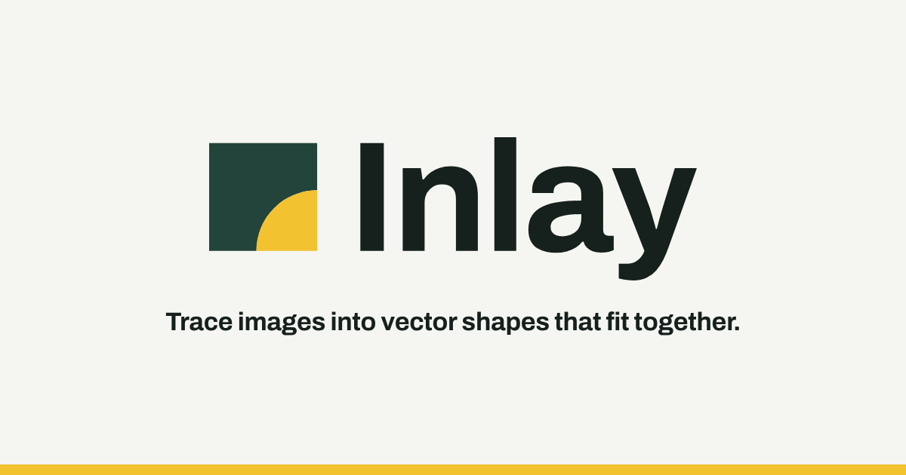

InlayBrand guidelinesVersion 1.0 · November 2026Trace images into vector shapes that fit together.
Inlay turns logos, illustrations, line art and pixel art into SVG. Every edge between two colours is traced once and shared by both shapes, so they fit together exactly, like inlaid wood: no gaps, no overlaps, no slivers.
It runs in the browser, keeps images on the device, and is free and open source, as an app and as the inlaytrace package.
Use the full logo wherever there is room, and the mark alone where space is small or square. On dark grounds use the dark version; where only one ink is available, use the one-colour logo in black or white.
A square with a quarter-disc set into its corner: the disc’s radius is 9/16 of the side and its centre is the square’s corner, so the two pieces share one true arc. The dashed line is the clear space: 25 % of the mark’s height on every side, kept free of text and other graphics.
Below its minimum width, step down to the mark; below 32 px use the favicon.
Files in icons/. Platforms round or mask the corners themselves; supply the square art as it is.
Archivo Display and text · 700
ABCDEFGHIJKLMNOPQRSTUVWXYZ
abcdefghijklmnopqrstuvwxyz
0123456789 !@#$%&*()+-/?
Bold 700Regular 400
Trace images into vector shapes that fit together.
Headings are set in Archivo at 700 with slightly tight spacing; body copy in Archivo at 400, 16–18 px on screen and 10–12 pt in print, with a line height around 1.5. Keep lines to 60–75 characters. It is a free Google Font: load it from fonts.google.com or self-host the files.
The bar shows roughly how much of each colour to use. Text needs 4.5:1 against its background (3:1 for large type and graphics). CMYK values are a starting point for print; ask for a proof.
Every colour a website needs, made from the brand colours in OKLCH so steps of equal lightness look equal. Each scale has twelve steps, each with one job: 1–2 page and panel backgrounds, 3–5 component fills (rest, hover, pressed), 6–8 borders, 9–10 solid fills and their hover, 11–12 text. The brand colours themselves are kept exactly where they read.
Light
Body text sits on the page in the text colour; this line is the muted one. Links use the brand.
Dark
Body text sits on the page in the text colour; this line is the muted one. Links use the brand.
Components use the named roles (--bg, --surface, --text, --text-muted, --brand with --on-brand, --border, --danger-subtle with --danger-text …). Each role has a light and a dark value, so dark mode follows the system on its own, or data-theme on the page forces either. Files in web/: palette.css, palette.tailwind.css for Tailwind v4, tokens.json (W3C Design Tokens) for Figma and Style Dictionary, and palette.html with every value.
| light | Body text | 13.84:1 | Lc 96 |
| light | Secondary text | 5.53:1 | Lc 74 |
| light | Primary button label | 7.28:1 | Lc 90 |
| light | Input borders | 3.22:1 | Lc 57 |
| dark | Body text | 14.89:1 | Lc 96 |
| dark | Secondary text | 9.9:1 | Lc 70 |
| dark | Primary button label | 7.28:1 | Lc 90 |
| dark | Input borders | 3.29:1 | Lc 24 |
Every pair in web/palette.html passes WCAG 2.2 AA (4.5:1 for text, 3:1 for edges). Lc is the APCA score from the WCAG 3 draft: 75 for body text, 60 for other text.

Files in templates/email/. Host logo.png (set templates.email.logoUrl and export again), open signature.html in a browser, select all, copy and paste it into the mail client’s signature setting. signature.txt is the plain-text version.
One table with inline styles, so Gmail and Outlook keep it. The logo is the app-icon art on its own tile so it survives dark mode, and the text falls back to Arial where Archivo isn’t installed. Keep it to name, role, contact and site: no quotes, banners or icon rows.

Size 3.5 × 2 in trim (85 × 55 mm in Europe), with 0.125 in bleed on every side: business-card.pdf is 3.75 × 2.25 in, one page per side, fonts embedded and the logo in vector. Keep text 0.25 in inside the trim.
Layout The front carries only the logo, on the brand colour; the back carries the person: name in Archivo 10.5 pt, role and up to four contact lines at 7.5 pt, never under 6.5 pt. Order a proof: printers convert RGB to CMYK, so check the colour against the values on page 3.
Files in templates/slides/: an editable .pptx (each layout is a slide master with placeholders; opens in PowerPoint, Keynote and Google Slides) and a PDF. 16:9 with 0.75 in margins; titles in Archivo 38 pt (54 on the title slide), body 22–24 pt and never under 18; six points at most. Brand colour on title, section and closing slides, paper behind content. The full logo opens and closes the deck; content slides carry only the small mark.




Files in templates/social/, each with a -blank version (field, logo and bar, no text) for designing posts in Canva or Figma. One headline of eight words or fewer per image, the dark logo small in the top corner, the accent bar along the bottom. Stories keep text out of the top 250 and bottom 300 px, and the X header’s lower left sits under the profile picture. The portfolio cover is art with no words, drawn for the project; it is in portfolio/ with its phone version, icon and alt text.